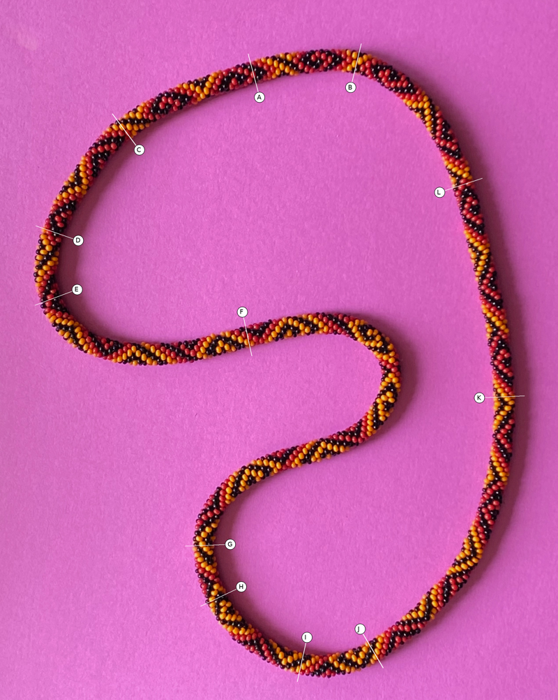
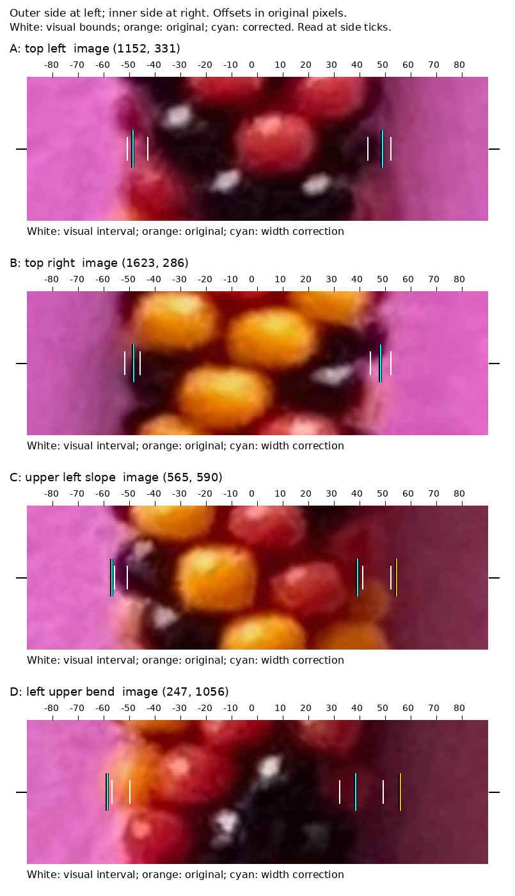
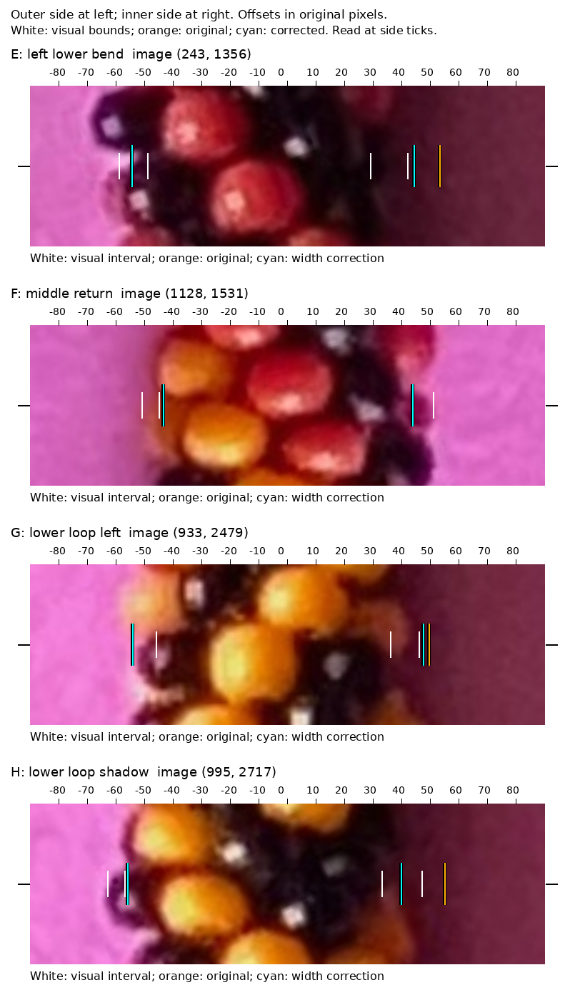
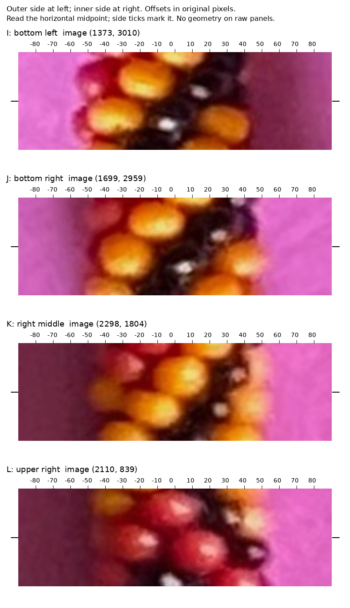

Twelve preselected locations. White brackets show assistant visual estimates from raw image strips, recorded before reading predicted offsets. The reviewer knew earlier whole-image results; these are not blind human ground truth. Original-photo pixels are used throughout.
Orange: saved edge. Cyan: width-constrained edge. Coincident lines appear cyan. Examine the horizontal midpoint, marked by side ticks; bead scallops above and below it can differ.




Zero means compatible with the marked interval, not a proven exact fit. These brackets describe local visible bead edges, while the saved curves are smooth outlines.
| Location | Visual width range | Original outer / inner | Corrected outer / inner | Visual observation |
|---|---|---|---|---|
| A: top left | 86–103 | 0.0 / 0.0 | 0.0 / 0.0 | Moderate blur at both edges; top reference. |
| B: top right | 90–104 | 0.0 / 0.0 | 0.0 / 0.0 | Outer dark bead and inner dark bead against brighter paper. |
| C: upper left slope | 92–108 | 0.9 / 2.4 | 0.9 / 1.8 | Inner reddish/yellow bead blends into colored shadow. |
| D: left upper bend | 82–106 | 1.6 / 6.9 | 1.6 / 0.0 | Dark inner bead has a broad ambiguous transition. |
| E: left lower bend | 78–101 | 0.0 / 11.3 | 0.0 / 2.4 | Outer scallop/notch at the transect; inner dark bead merges with shadow. |
| F: middle return | 89–102 | 1.5 / 0.1 | 1.5 / 0.1 | Yellow outer edge and dark inner edge; useful reference. |
| G: lower loop left | 82–100 | 0.1 / 3.5 | 0.1 / 1.6 | Outer scallop; inner yellow/dark bead against shadow. |
| H: lower loop shadow | 90–110 | 1.0 / 8.1 | 1.0 / 0.0 | Outer black bead tip; inner dark bead/shadow transition. |
| I: bottom left | 81–103 | 0.0 / 3.7 | 0.0 / 0.9 | Blurred bottom contour, especially the inner dark bead. |
| J: bottom right | 90–112 | 0.0 / 0.0 | 0.0 / 0.0 | Outer red bead in shadow; inner yellow bead against brighter paper. |
| K: right middle | 94–116 | 0.0 / 0.0 | 0.0 / 0.0 | Outer yellow bead merges into brown shadow; bright inner yellow edge. |
| L: upper right | 87–109 | 0.0 / 0.0 | 0.0 / 0.0 | Outer red/dark bead in shadow; brighter inner edge. |
The width correction improves several shadow-side edges but does not establish that every clear anchor is accurate. The original geometry remains the default. A direct edge-evidence term with uncertainty on both sides is needed before adoption.